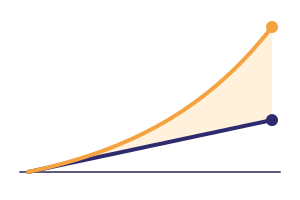

Festival Idea Putrajaya 2026 · IPT · Edutainment & Innovation
Bijak duit, kebal scam
A phone-sim game where students live one university semester of money decisions, with scams as the high-stakes events.
Akmal · Wafi · Danish · Aimar
The problem
The costliest scam type, three years running
Home Ministry via The Sun [VERIFY]in BNM's financial literacy index
BNM, Sasana Symposium 2025 [VERIFY]have the basic savings for their age
MOF reply, Aug 2025 [VERIFY]First-year students manage PTPTN or scholarship money and a first bank account alone, and syndicates offer them RM1,000-2,000 to "rent" that account.
Our solution
Needs, wants, savings; the emergency fund decides how tempting later offers feel
First pay, hostel fees, a friend's unit trust, buy-now-pay-later
Job scams, mule accounts, fake crypto, fake police calls, all fictional brands
2-minute Cek Harian with a streak; Mod Kelas battles for orientation week
The Kalkulator turns every promise into maths: 30% a week is millions of percent a year, so it can't be real.
Why it's different
| Typical awareness talk | Money apps / games | Celik | |
|---|---|---|---|
| Student life (PTPTN, hostel, first pay) | Generic | Generic adult life | Built for it |
| Real vs fake investment, side by side | - | Rarely | Same decision twice, with the maths |
| Safe to fail, then retry | - | Sometimes | Every scenario |
| Comes back after day 1 | One-off | Streaks | Daily booster + orientation battles |
| Works offline, collects nothing | - | Usually online | Yes |
Live demo · 3 minutes · airplane mode

Does it work?
12 questions: 6 money, 6 scam-spotting
Money [a→b] · Scam [c→d]
[one limitation from results.md]
Game-based inoculation fades without boosters (Maertens et al.), which is why Cek Harian exists.
Business model
Orientation-week package: Mod Kelas kit, seasonal content packs, facilitator training
Price per student: [TO FILL]2-3 universities, with the before/after test at each
Splash-screen credit only: never a brand, character or recommendation in the game
Near-zero cost per extra student: a static offline web app, no servers, no data to protect.
Roadmap
Before/after test, feedback from HEP officers
Seasonal packs: new scams, Raya, PTPTN season
Internship allowance, first EPF contribution; anonymous campus dashboard
Learn to grow your money, and spot who's trying to take it.
Our ask: [TO FILL: e.g. a pilot partner university and grant support]